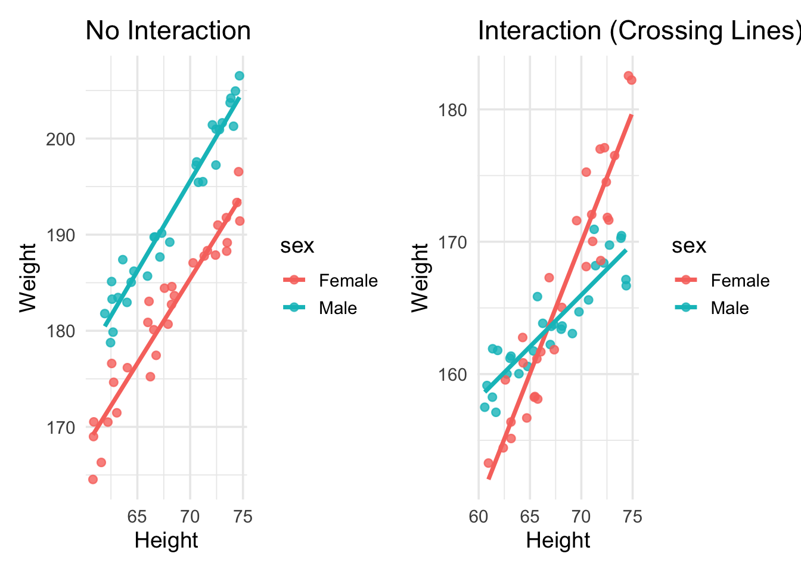
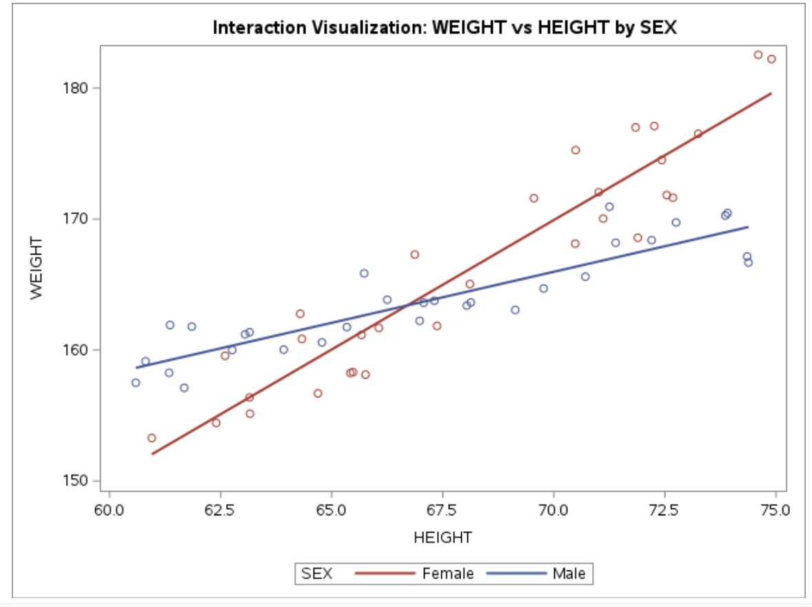
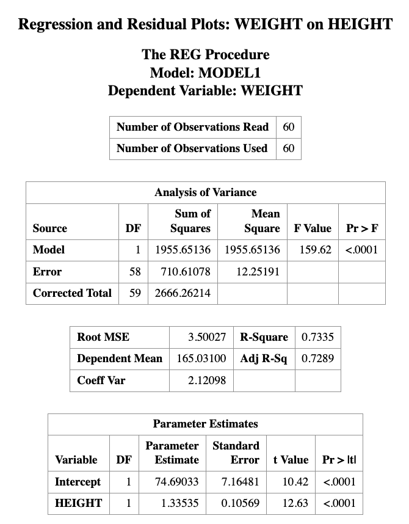
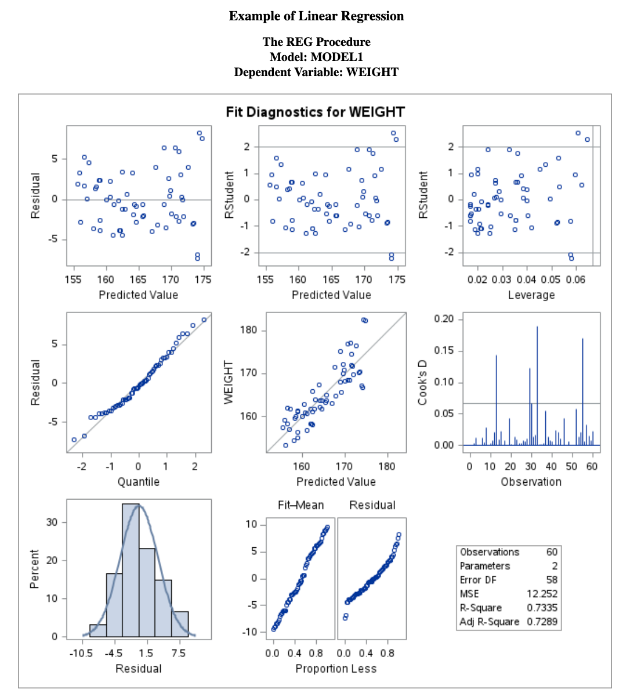
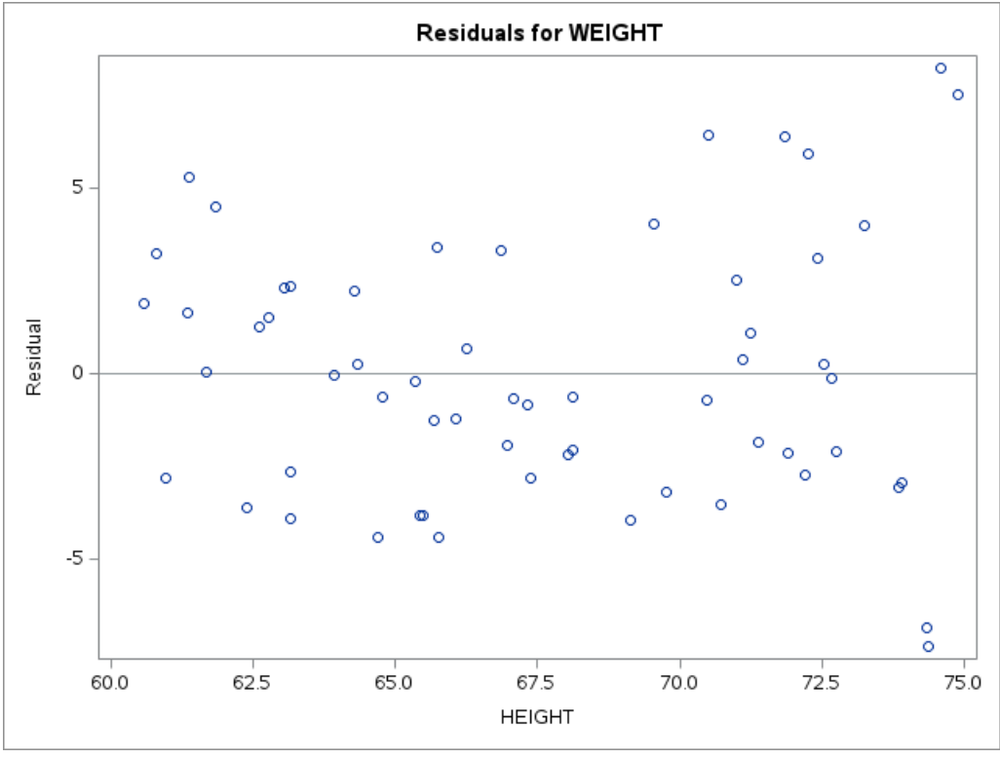
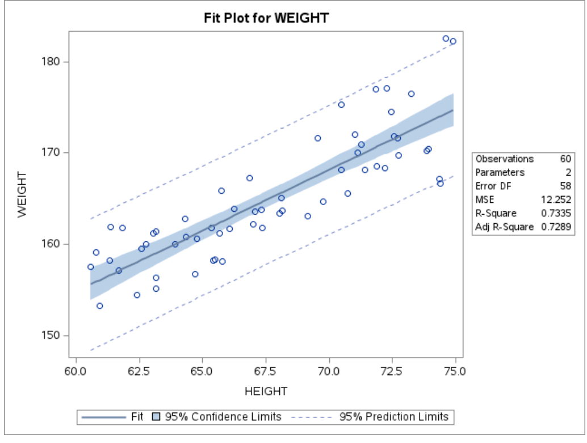
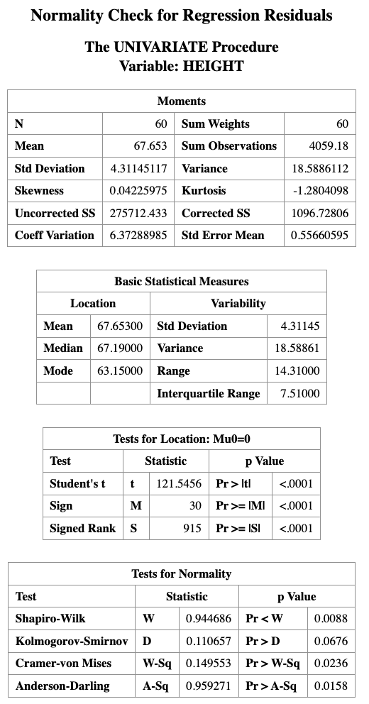
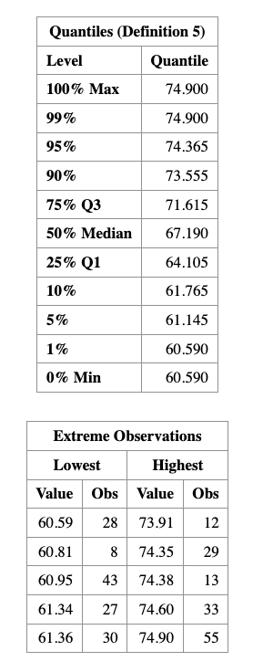
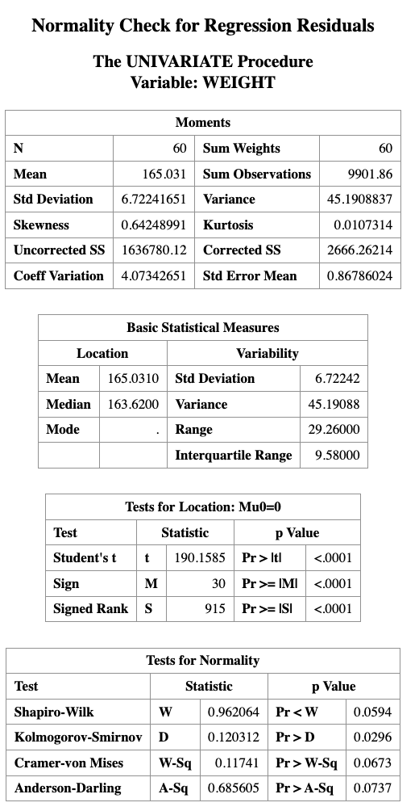

15 Regression with Interaction
Learning Objectives
- Understand interaction effects in regression models
- Distinguish between main effects and interaction effects
- Interpret regression coefficients in an interaction model
- Compute and interpret simple slopes
15.1 Why Do We Need Interaction?
In many real-world problems, the effect of one variable may depend on another variable.
For example:
- Does the effect of study time depend on gender?
- Does treatment effectiveness depend on age?
- Does price sensitivity depend on income?
If the relationship between predictors is not constant, a simple additive model is not sufficient.
This motivates the need for interaction terms.
Without interaction → parallel lines
With interaction → non-parallel lines
15.2 Visualizing Interaction Effects
The easiest way to understand interaction is through visualization.
ImportantHow to visually detect interaction
For two groups:
- Parallel regression lines suggest no interaction
- Non-parallel regression lines suggest interaction
- Crossing lines indicate a strong interaction effect
PROC SGPLOT DATA=MEASUREMENT;
TITLE "Interaction Visualization: WEIGHT vs HEIGHT by SEX";
REG X=HEIGHT Y=WEIGHT / GROUP=SEX;
RUN;
TITLE;
15.3 Main-Effects Model vs Interaction Model
A main-effects model assumes each predictor has a constant effect across all levels of the other predictors.
For example, suppose we want to predict weight using a person’s sex and height. A regression model with only main effects can be written as
\[ \text{weight} = \beta_0 + \beta_s \text{SEX} + \beta_h \text{HEIGHT} \]
The coefficient \(\beta_h\) represents a weighted average of the height effects for males and females, had we modeled them separately.
Thus, the main-effects model assumes that the effect of height is the same for both males and females. However, if the effect of height differs by sex, then we need an interaction term.
The regression model with interaction becomes
\[ \text{weight} = \beta_0 + \beta_s \text{SEX} + \beta_h \text{HEIGHT} + \beta_{sh}(\text{SEX} \times \text{HEIGHT}) \]
WarningImportant
In a regression model that includes interaction terms, the coefficients of the individual variables are no longer interpreted as overall main effects.
Instead, they represent the effect when the interacting variable equals 0.
Thus:
- \(\beta_h\) represents the effect of HEIGHT when SEX = 0
- \(\beta_s\) represents the effect of SEX when HEIGHT = 0
If we code
- SEX = 0 → male
- SEX = 1 → female
then we can construct the regression equations for males and females separately.
15.4 Regression Equations by Group
Substitute \(SEX = 0\) into the interaction model:
\[ \begin{aligned} \text{weight}_{male} &= \beta_0 + \beta_s(0) + \beta_h \text{HEIGHT} + \beta_{sh}(0)\text{HEIGHT} \\ &= \beta_0 + \beta_h \text{HEIGHT} \end{aligned} \]
Substitute \(SEX = 1\):
\[ \begin{aligned} \text{weight}_{female} &= \beta_0 + \beta_s(1) + \beta_h \text{HEIGHT} + \beta_{sh}(1)\text{HEIGHT} \\ &= \beta_0 + \beta_s + \beta_h \text{HEIGHT} + \beta_{sh}\text{HEIGHT} \\ &= \beta_0 + \beta_s + (\beta_h + \beta_{sh})\text{HEIGHT} \end{aligned} \]
Thus, slope for males is \(\beta_h\) and the slope for females is \(\beta_h + \beta_{sh}\).
15.5 Interpreting the Interaction Coefficient
From the previous equations, we can see that the effect of HEIGHT differs for males and females.
For males (SEX = 0), the slope of height is \[ \beta_h \]
For females (SEX = 1), the slope of height is \[ \beta_h + \beta_{sh} \]
Thus, HEIGHT has a different effect for males and females.
The interaction coefficient
\[ \beta_{sh} \]
represents the difference between the height effects for males and females.
In other words, a one-unit increase in SEX (changing from male to female) changes the slope of HEIGHT by \(\beta_{sh}\).
It is important to note that this interpretation holds when the main effects are included in the model together with the interaction term.
If the interaction term were entered without the corresponding main effects, the interpretation of the coefficient would change.
Suppose the fitted model is
\[ \widehat{\text{weight}} = 20 + 5\text{SEX} + 2\text{HEIGHT} + 1(\text{SEX}\times\text{HEIGHT}) \]
Then:
- Male slope = 2
- Female slope = 2 + 1 = 3
Interpretation:
- For males, a one-unit increase in height increases expected weight by 2 units.
- For females, a one-unit increase in height increases expected weight by 3 units.
Thus, the effect of height is stronger for females.
15.6 SAS Implementation
15.6.1 Example dataset
DATA MEASUREMENT;
INPUT SEX $ HEIGHT WEIGHT;
DATALINES;
Male 67.07 163.61
Male 66.98 162.23
Male 69.13 163.06
Male 67.31 163.76
Male 66.25 163.84
Male 72.20 168.39
Male 71.39 168.19
Male 60.81 159.14
Male 64.78 160.58
Male 68.13 163.63
Male 63.15 161.36
Male 73.91 170.46
Male 74.38 166.68
Male 69.77 164.70
Male 73.86 170.27
Male 65.34 161.75
Male 72.75 169.74
Male 63.92 160.03
Male 61.85 161.79
Male 71.25 170.94
Male 61.68 157.11
Male 70.71 165.60
Male 65.73 165.85
Male 68.04 163.39
Male 62.76 160.00
Male 63.05 161.20
Male 61.34 158.26
Male 60.59 157.50
Male 74.35 167.14
Male 61.36 161.91
Female 65.42 158.25
Female 65.76 158.12
Female 74.60 182.54
Female 65.67 161.15
Female 66.06 161.69
Female 62.60 159.56
Female 72.26 177.10
Female 65.48 158.31
Female 66.87 167.29
Female 64.29 162.77
Female 71.11 170.03
Female 62.40 154.43
Female 60.95 153.28
Female 63.15 156.38
Female 72.54 171.83
Female 70.49 175.26
Female 72.68 171.63
Female 67.37 161.84
Female 68.11 165.04
Female 70.48 168.12
Female 64.33 160.85
Female 71.84 177.00
Female 69.55 171.59
Female 64.69 156.69
Female 74.90 182.22
Female 71.89 168.57
Female 73.25 176.51
Female 72.43 174.51
Female 71.01 172.05
Female 63.16 155.14
;
RUN;15.6.2 Fit the interaction model in SAS
PROC GLM DATA=MEASUREMENT;
CLASS SEX;
MODEL WEIGHT = HEIGHT SEX HEIGHT*SEX;
STORE INTMODEL;
RUN;15.6.3 Plot fitted interaction in SAS
PROC PLM RESTORE=INTMODEL;
EFFECTPLOT INTERACTION(X=HEIGHT SLICEBY=SEX);
RUN;15.6.4 Quick visualization in SAS
PROC SGPLOT DATA=MEASUREMENT;
TITLE "Interaction Visualization: WEIGHT vs HEIGHT by SEX";
REG X=HEIGHT Y=WEIGHT / GROUP=SEX;
RUN;
TITLE;15.7 Checking Regression Assumptions in SAS
The following SAS code fits a regression model and produces diagnostic plots for checking model assumptions.
PROC REG DATA=MEASUREMENT;
TITLE "Regression and Residual Plots";
MODEL WEIGHT = HEIGHT;
OUTPUT OUT=MYOUT R=RESID;
RUN;
PROC UNIVARIATE DATA=MYOUT NORMAL;
QQPLOT RESID / NORMAL(MU=EST SIGMA=EST COLOR=RED L=1);
RUN;






Description of the Code
PROC REGfits the linear regression model relating weight to height.OUTPUT OUT=MYOUT R=RESIDsaves the residual values from the regression model into a new dataset calledMYOUT.PROC UNIVARIATEis used to examine the distribution of the residuals.QQPLOT RESIDproduces a Q–Q plot to visually assess whether the residuals follow a normal distribution.
15.8 PROC PLM
This section relies heavily on PROC PLM to estimate, compare, and visualize the conditional effects of interactions. Before applying it to interaction models, we briefly introduce PROC PLM in general.
PROC PLM performs various analyses and plotting functions after a regression model has been fitted. It can be used for:
- testing custom hypotheses about model parameters
- computing predicted values
- estimating simple effects and contrasts
- creating visualizations of predicted values
Unlike most SAS procedures, PROC PLM does not directly use a dataset as input.
Instead, it reads from an item store, which contains information about a previously fitted model.
An item store can be created by several SAS modeling procedures, including:
PROC GLMPROC GENMODPROC LOGISTICPROC PHREGPROC MIXEDPROC GLIMMIX
These procedures create the item store using a STORE statement.
Later, PROC PLM accesses this stored model using the RESTORE= option.
15.8.1 Example with PROC PLM
DATA EXERCISE;
INPUT HOURS EFFORT $ LOSS;
DATALINES;
1 Low 3.0
2 Low 4.0
3 Low 5.0
4 Low 6.0
5 Low 7.0
1 High 2.0
2 High 4.0
3 High 7.0
4 High 11.0
5 High 16.0
;
RUN;PROC GLM DATA=EXERCISE;
CLASS EFFORT;
MODEL LOSS = HOURS|EFFORT;
STORE CONTCONT;
RUN;
PROC PLM RESTORE=CONTCONT;
EFFECTPLOT SLICEFIT(X=HOURS SLICEBY=EFFORT);
RUN;
NoteKey Takeaways
- Interaction means the effect of one variable depends on another
- Main effects are no longer “global effects”
- Always interpret simple slopes
- Visualization is the easiest way to detect interaction